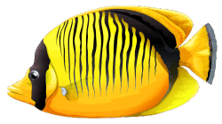
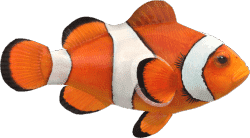
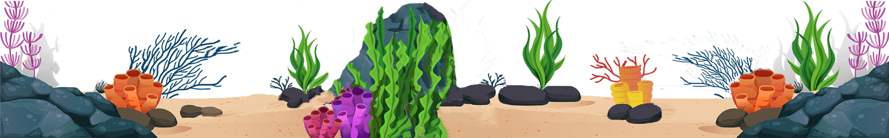
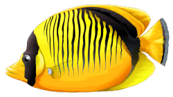
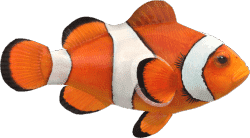
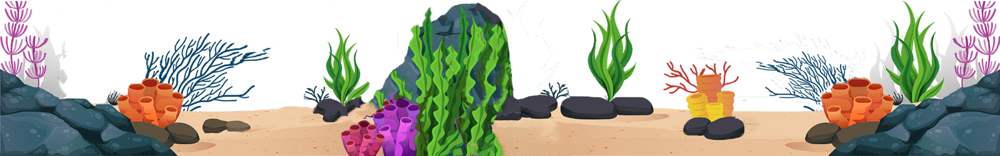

Parallax Scrolling Effects
What is parallax scrolling?
Parallax scrolling is a web design technique in which the website background moves at a slower pace than
the foreground. This results in a 3D effect as visitors scroll down the site, adding a sense of depth
and creating a more immersive browsing experience. Parallax is based on optical illusion.
Since the human eye perceives objects that are close to us as arger than things farther away,
we perceive distant objects as if they were moving more slowly. The illusion has been long adopted into
parallax across different mediums, fostering a realistic effect. Its first use was in traditional
animation,
dating back to as early as Disney's Snow White and the Seven Dwarfs, and in video games such as Super
Mario.
With advancements in CSS and HTML, parallax effects later evolved into the world of web design as we
know it today.
One of the first implementations of parallax scrolling in the browser was created and shared in a blog
post by web developer Glutnix in 2007, this included example code and a demo using JavaScript and CSS 2
that supported Internet Explorer 6 and other browsers of that era. However, it wasn't until 2011 and the
introduction of HTML5 and CSS 3 coding that the technique became popular with Web designers. Advocates
argue it is a simple way to embrace the fluidity of the Web. Proponents use parallax backgrounds as a
tool to better engage users and improve the overall experience that a website provides. However, a
Purdue
University study, published in 2013, revealed the following findings: "... although parallax scrolling
enhanced certain aspects of the user experience, it did not necessarily improve the overall user
experience".
Why should I use parallax graphics?
-
It helps tell a story
Parallax graphics are ideal for storytelling. Good design is all about communication—and when we design websites, we want to communicate with our visitors and tell a compelling story about our product, service, or brand. Parallax scrolling allows us to immerse our website visitors in unique online experiences. It's even possible to create a one-page website where visitors can read an entire story about your product or brand without navigating to multiple pages.
-
It helps to improve user engagement
Parallax graphics can be used to improve user engagement. Reducing your website’s bounce rate is one of the goals to be conscientious of in web design. Bounce rate measures the percentage of site visitors who either hit the “back” button or close the tab after checking just one page of your website. High bounce rates hurt your search ranking, so any actions you can take to bring that rate down are worthwhile. A well-crafted parallax page gives the user the type of dynamic experience that tends to keep them on the page longer.
There are two main reasons why designers should try parallax graphics:
If you want to add a parallax scrolling effect to your website, you should consider the following tips.
-
Use it selectively
Parallax scrolling is much more powerful when you use it on one particular element as opposed to all pages and all the time. Use it in headers and titles, or maybe on your homepage only. You want parallax scrolling to strengthen your website's design, not distract users.
-
Image compression
Parallax scrolling uses a variety of media files and CSS shapes to create a sense of depth. You don't want to compromise your web performance and user experience ith large image files that load too slowly.
-
Play with color
Parallax scrolling isn't just about the images in the foreground and background, but about color, too. You might use more desaturated tones in the background and more lively colors in the foreground to create an even greater sense of depth.
 




